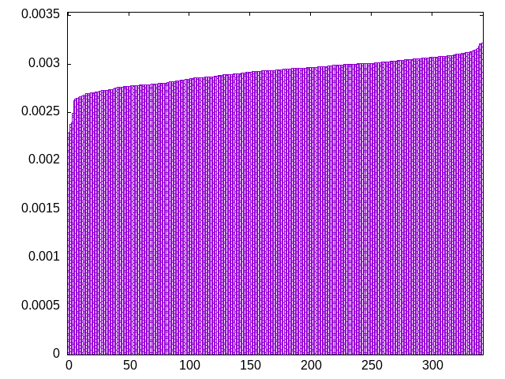
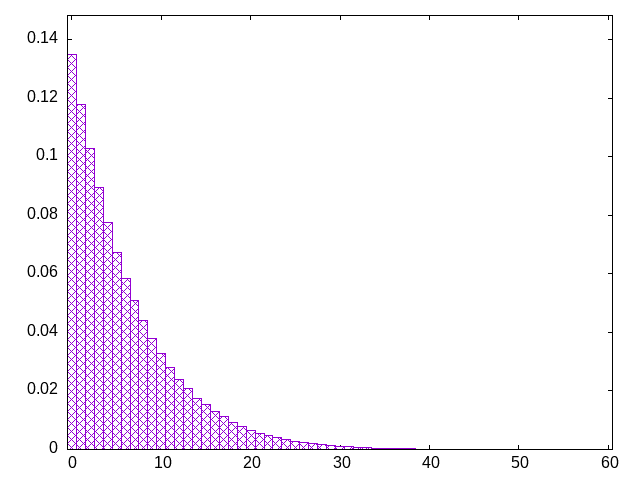

full random but with drought protection
identical to wet2 for low history sizes (up to 14?), but unlike wet2 it will still balance counts on larger histories
oljtzsiizsjltojzlisotistjolzjztlositzlojsiitjzoslozisjltsjioztljlitszoliztjosojlzsitjotizlssotzjiljlioostzjtizsjlzijzllsotistjoitlzjtoszlztolsiiojiosslzjziltsjiotzojltlsjotizztossjlzsiijotiljostsztiljljoozotsjizltzzijlzlsjisitjolttlzoosjiztsltsioliozsoijzsllsjijtzozjtlsiotozzttlsjiszoijjsilojststziljlioozottjjollzziztilsjslitjjlitzloosotztsztsijliosiosizzllsjljstozjtzoiljoozttsljisztiijsjzoisjsttslilooizootjjzlllzzitjilzsoitjjltlisloostztoztszjsilisojiszolisljltszjtzotojjozotillisztsijijzzisjsttsstlooiiootjjzlllzziljilztoiojjstltilzossjtoztozlssiljzjisoiostljllszstzjtoojtzooizliiztssjijzzisjittsstlotiloojtjjlslzzilzilojoilijstztltiozsjlojtozzssloiljisztostojllssszjzttojojotizliizlossijzzisjittjststiilooltjjljszzilzliolotoijszjtltilztziojsojzszloilojsstiltoslzosstjzztljojotojziiilzssoijzisslttjststiitoolijjljjzzslzlizlotoiojijtltilztzzsoljoszitzslojlstilsooszlistjsztjtojotojzoiilziszsjijzslsttolstiitsoijtjljjizolzllzjlsoioiojtitjlztzzzillosojtzstoilstjlsozsslilztssojtijotojzojiozitzsjis
bagginess: 0.0076
bagginess6: 0.1545
distribution1_maxgap: 2.0999999999993246e-05
distribution2_maxgap: 0.0002840002840002846
distribution3_maxgap: 0.0001320002640005282
distribution4_maxgap: 1.6000048000144017e-05
diversity: 4.7
entropy: 11.601
evenness_diff: 6.508
evenness_same: 5.514
maxdrought: 54.0
maxflood: 6
peakdrought: 0.0
repchance: 0.1347
seq4_coverage: 1.0000
seq4_follow: 6.078
distribution3_graph:

drought_graph:

similarity: (lower is more similar)
| 0.026 | balanced_long_add_pure |
| 0.027 | shift21 |
| 0.027 | balanced_long_mul_pure |
| 0.042 | deepbag_window10 |
| 0.043 | balanced9 |
| 0.044 | shift14 |
| 0.051 | wet2_size100 |
| 0.060 | shift10_5 |
| 0.066 | deepbag_fixed10 |
| 0.070 | fullrandom |
| 0.071 | bag4 |
| 0.073 | seamless_bag3_pure |
| 0.074 | bag3 |
| 0.090 | deepbag_window7 |
| 0.150 | fullrandom_pure |
| 0.150 | seamless_bag2_pure |
| 0.164 | nes_pure |
| 0.180 | nes |
| 0.197 | bag2 |
| 0.198 | shift7 |
| 0.200 | balanced7 |
| 0.365 | deepbag_fixed7 |
| 0.376 | weight_lin_pure |
| 0.398 | balanced5 |
| 0.398 | deepbag_window4 |
| 0.415 | weight2 |
| 0.461 | wet3_size12 |
| 0.520 | shirts_g3w7 |
| 0.539 | seamless_deep_pure |
| 0.544 | wet2 |
| 0.652 | weight |
| 0.675 | shirts_smooth_c10 |
| 0.775 | deepbag_fixed4 |
| 0.775 | shirts_smooth_c12 |
| 0.778 | tgm_pure |
| 0.800 | tgm |
| 0.809 | shirts_g1w7 |
| 0.889 | bag |
| 0.898 | bag_pure |
| 0.942 | shift3_5 |
| 1.036 | shirts_smooth_c14 |
| 1.041 | shirts_smooth_c8 |
| 1.044 | shirts_g1w3 |
| 1.053 | tgm_tap |
| 1.077 | tgm_tap_pure |
| 1.105 | wet_pure |
| 1.122 | wet |
| 1.196 | weight_exp |
| 1.215 | ti |
| 1.322 | weight_exp_pure |
| 1.489 | seamless_bag_pure |
| 1.764 | shirts |
| 1.983 | shirts_smooth |
| 1.998 | repeat_recent_pure |
| 2.966 | shift1_75 |
| 4.053 | repeat_last_pure |
| 9.270 | flatbag |
| 9.270 | flatbag_pure |